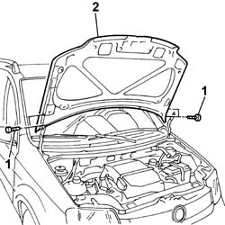

7210E20 R.R. BONNET LID
- Path
- Procedures > 72 PANELS AND FRAME > 7210 REMOVING REFITTING > 7210E EXTERNAL PARTS > 7210E20 R.R. BONNET LID
- Kind
- repair procedure (removal / refitting; the operation number is the code)
- Applies to
- all engines; all production periods
- Interactive page
- https://sloeber94.github.io/elrnDB-fPnd/en/#/2753355
Applies to: all engines; all production periods
 Removing
Removing
 Refitting
Refitting1. Unscrew the bolts securing the bonnet lid hinges, lid side.
2. With the aid of a second operator, remove the bonnet lid and place on a suitable board.

Applies to: all engines; all production periods
Refitting
RemovingCheck the bonnet lid paintwork is undamaged.
Touch up the paintwork if necessary.
Fit the bonnet lid and screw in the bonnet lid hinge bolts, lid side, without tightening to torque.
Loosen the catch retaining bolts.